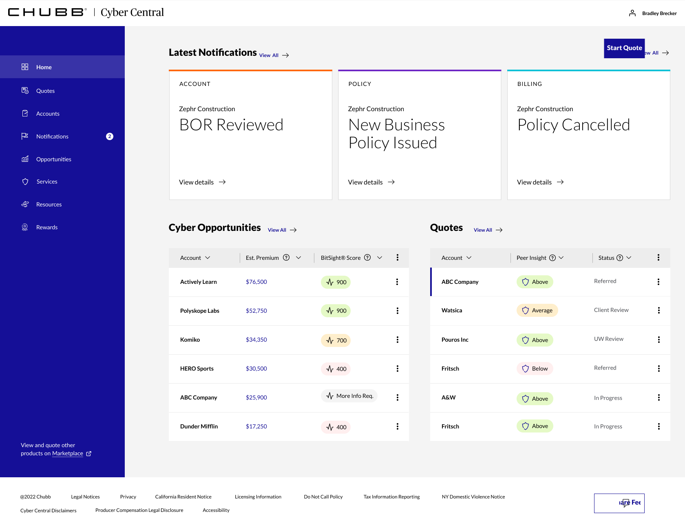
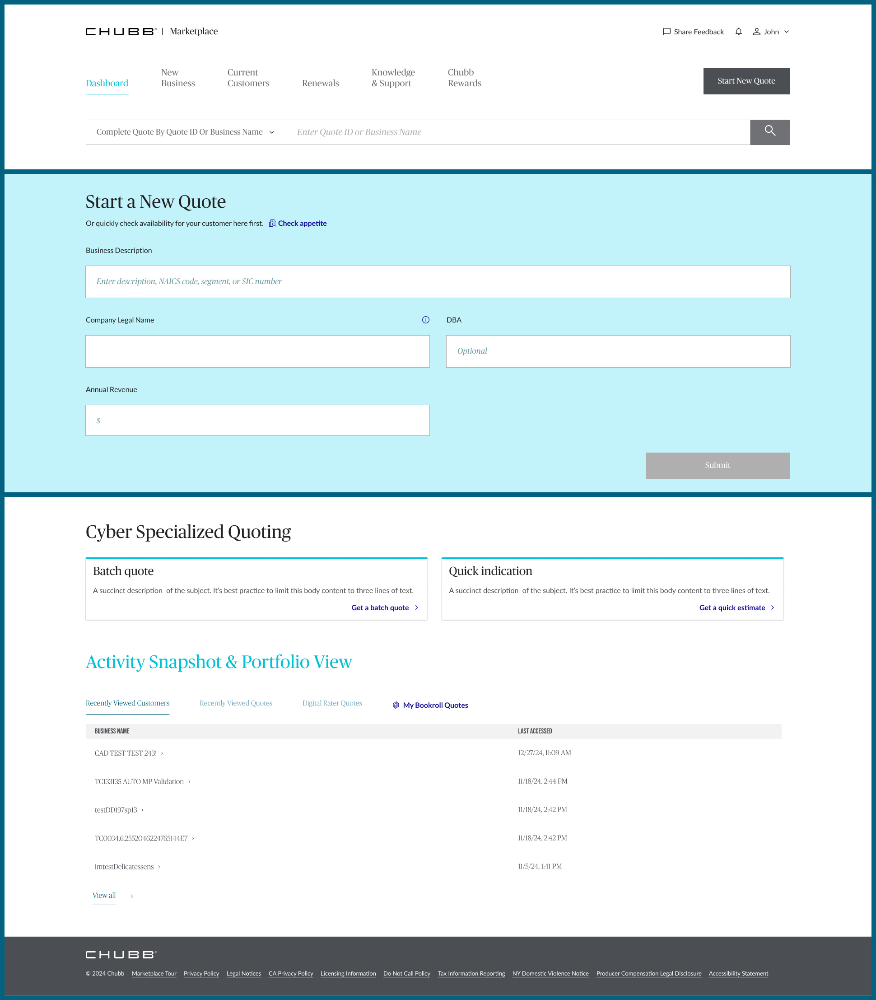
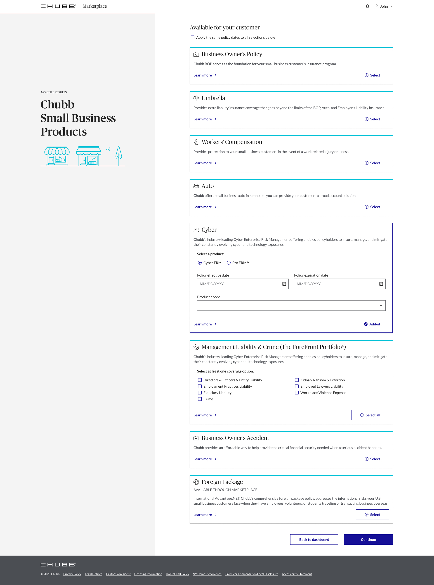

From Spoke to Suite
Cyber insurance quoting lived on its own island. Agents knew it, research confirmed it, and it fell to a new team to change that.

Cyber insurance quoting lived on its own island. Agents knew it, research confirmed it, and it fell to a new team to change that.
Role
UX Designer
Timeline
9 months, 2022–2023
Tools
Figma
Impact
First DS migration at Chubb; Cyber consolidated into Marketplace
01. Context & Challenge
Cyber Central was its own world. Agents and brokers using Chubb's Marketplace to quote for clients could access most products in one place, but to quote Cyber, they had to leave entirely. A separate spoke site with its own navigation, its own login context, its own experience. Research had already confirmed what agents were experiencing: the split created friction in an already complex workflow and made the overall platform feel incomplete.
The design system added another layer of complexity. At the time I joined, the Chubb design system was in its early stages. Most products across the company hadn't yet made the switch to the Angular version that supported it. There was no established migration playbook, and our team was new enough that most of the organization didn't know we existed yet.
02. My Role & Process
I was brought in alongside another designer to work on Cyber Central, where I took on two parallel tracks: designing the batch quote feature, which allowed agents to submit multiple quotes in a single action rather than one at a time, and owning the full lift-and-shift of Cyber Central to the new design system. I was the first designer at Chubb to migrate an entire product to the DS, which meant building the approach as I went.
The migration required mapping every existing component to its design system equivalent, identifying gaps where DS components didn't yet exist, and working closely with engineering to navigate the Angular version constraints. Beyond the component work, I was thinking about what the experience should feel like once the foundation was right, which shaped the updated information hierarchy and dashboard structure.

Once Cyber moved into Marketplace, I transitioned into owning the Cyber and Auto product experience within the platform. That meant bringing batch quote and multi-quote capabilities into Marketplace quoting flow, and contributing to the broader appetite and product selection experience that agents use to build coverage recommendations for their clients.

03. Constraints & Organizational Context
Our team was new, and the organization hadn't caught up to our existence yet. That gap affected how quickly we could build alignment, secure engineering resources, and move decisions forward.
The early-stage design system added real technical friction: the Angular version mismatch meant components couldn't simply be swapped in. Every migration decision required a conversation with engineering. Working through that without an established process, and being the first to do it, meant there was no playbook to reference. We were building it as we shipped.
The structural disconnect between the Cyber spoke site and Marketplace teams created coordination challenges that weren't always visible from the design side. Bringing Cyber into Marketplace wasn't just a design migration. It was an organizational alignment problem that design work had to navigate alongside.
04. Outcomes & Impact
The consolidation shipped. Cyber now lives as a first-class product within the Marketplace, accessible to agents without leaving the platform they already work in, sitting alongside BOP, Auto, Umbrella, and the rest of Chubb's small business suite.

The batch quote and multi-quote capabilities we built on Cyber Central made it into Marketplace experience, surfaced directly on the dashboard as dedicated entry points within the Cyber Specialized Quoting section.
The design system migration set a precedent. Being the first designer to flip a product to the DS meant that teams who came after had something to reference: a proof of concept that the migration could be done, and a rough map of the process. What started as figuring it out alone became the foundation for how DS adoption scaled across other products at Chubb.